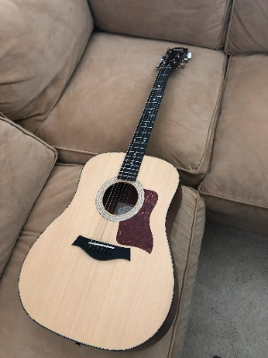
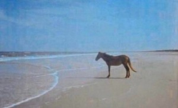
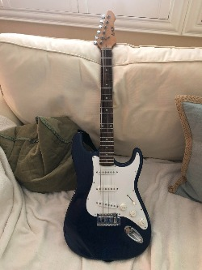

My family - we took this photo right before we drove to Arizona
Manny - our 9 year old golden retriever
Cody - our 7 year old standard poodle
Nathan
Our new puppy named Teddy!
Santa Clarita, CA
My drawings
RPG Raptor Shark
A scene in Jurassic Park was filmed here!
Piestewa Peak

My acoustic guitar
Manny Drawing

Sad horse
Hiking trail in my neighborhood

My electric guitar
Snow at Lake Arrowhead
My Music Collection
Here are some of my favorite songs. While I have hundreds of songs I enjoy, these are some that I always go
back to
"Sweater Weather" - The Neighbourhood
Lyrics
Verse 1
All I am is a man
I want the world in my hands
I hate the beach but I stand
In California with my toes in the sand
Use the sleeves of my sweater
Let's have an adventure
Head in the clouds but my gravity's centered
Touch my neck and I'll touch yours
You in those little high waisted shorts, oh
Pre-Chorus
She knows what I think about
And what I think about
One love, two mouths
One love, one house
No shirt, no blouse
Just us, you find out
Nothing that I wouldn’t wanna tell you about, no
Chorus
'Cause it's too cold for you here
And now, so let me hold
Both your hands in the holes of my sweater
Verse 2
And if I may just take your breath away
I don't mind if there's not much to say
Sometimes the silence guides a mind
To move to a place so far away
The goosebumps start to raise
The minute that my left hand meets your waist
And then I watch your face
Put my finger on your tongue
'Cause you love the taste, yeah
These hearts adore
Everyone the other beats hardest for
Inside this place is warm
Outside it starts to pour
Pre-Chorus
Comin' down
One love, two mouths
One love, one house
No shirt, no blouse
Just us, you find out
Nothing that I wouldn't wanna tell you about
No, no, no
Chorus
'Cause it's too cold for you here
And now, so let me hold
Both your hands in the holes of my sweater
'Cause it's too cold for you here
And now, so let me hold
Both your hands in the holes of my sweater, woah
'Cause it's too cold for you here
And now, so let me
Both your hands in the holes of my sweater
'Cause it's too cold for you here
Now, let me hold
Both your hands in the holes of my sweater
Outro
And it's too cold, it's too cold
The holes of my sweater
"Fly Me to the Moon" - Frank Sinatra
Lyrics
Verse 1
Fly me to the moon
Let me play among the stars
And let me see what spring is like
On a-Jupiter and Mars
In other words, hold my hand
In other words, baby, kiss me
Verse 2
Fill my heart with song
And let me sing forevermore
You are all I long for
All I worship and adore
In other words, please be true
In other words, I love you
Verse 3
Fill my heart with song
Let me sing forevermore
You are all I long for
All I worship and adore
In other words, please be true
In other words, in other words
I love you
"Karma" - AJR
Lyrics
Chorus
I've been so good
I've been helpful and friendly
I've been so good
Why am I feeling empty?
I've been so good
I've been so good this year
I've been so good
But it's still getting harder
I've been so good
Where the hell is the karma?
I've been so good
I've been so good this year
Verse 1
Why are you asking me why?
My days and nights are filled with disappointment
Fine, oh, no, everything's fine
I'm not sure why I booked today's appointment
Chorus
I've been so good
I've been helpful and friendly
I've been so good
Why am I feeling empty?
I've been so good
I've been so good this year
And I've been so good
But it's still getting harder
I've been so good
Where the hell is the karma?
I've been so good
I've been so good this year
Verse 2
What? Am I normal or not?
Am I crazier than other patients?
Right, I've done everything right
So where's the karma, Doc? I've lost my patience
Chorus
'Cause I've been so good
I've been working my ass off
I've been so good
Still, I'm lonely and stressed out
I've been so good
I've been so good this year
And I've been so good
But it's still getting harder
I've been so good
Where the hell is the karma?
I've been so good
I've been so good this year
Bridge
Ah, ah, ah
Ah, ah, ah
I've been so good this year
I've been so good this year
Outro
Time, I know we're out of time
But what if sad thoughts come and I can't stop it?
Bye, I don't wanna say bye
If only I could keep you in my pocket
To give me some diagnosis of why I'm so hollow
Please give me instructions, I promise I'll follow
I tripped on my ankle and fractured my elbow
But doesn't that mean that the tour's gonna sell, though?
I try to explain the good faith that's been wasted
But after an hour, it sounds like complaining
Wait, don't go away, can I lie here forever?
You say that I'm better, why don't I feel better?
The universe works in mysterious ways
But I'm starting to think it ain't working for me
Doctor, should I be good, should I be good this year?
"When I Come Around" - Green Day
Lyrics
Verse 1
Well, I heard you crying loud
All the way across town
You've been searching for that someone and it's me out on the prowl
As you sit around feeling sorry for yourself
Well, don't get lonely now
And dry your whining eyes
I'm just roamin' for the moment, sleazin' my backyard, so don't get
So uptight, you've been thinking about ditching me
Chorus
No time to search the world around
'Cause you know where I'll be found
When I come around
Verse 2
Oh, I heard it all before
So don't knock down my door
I'm a loser and a user, so I don't need no accuser
To try and slag me down because I know you're right
So go do what you like
Make sure you do it wise
You may find out that your self-doubt means nothing was ever there
You can't go forcing something if it's just not right
Chorus
No time to search the world around
'Cause you know where I'll be found
When I come around
Guitar Solo
Chorus
No time to search the world around
'Cause you know where I'll be found
When I come around
When I come around
When I come around
When I come around
My Video Collection
My videos
Cody watching TV
Alert! The link below will open YouTube in a new tab